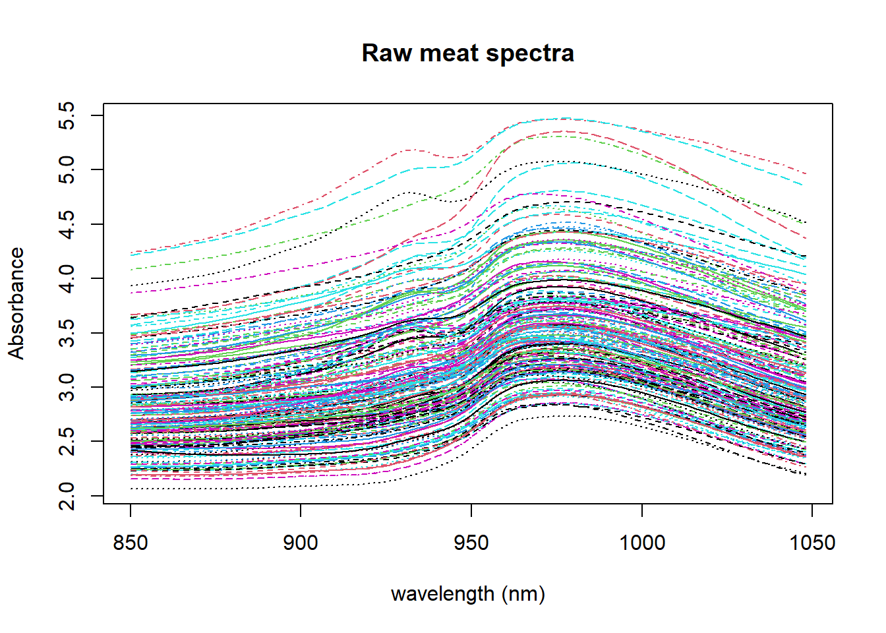
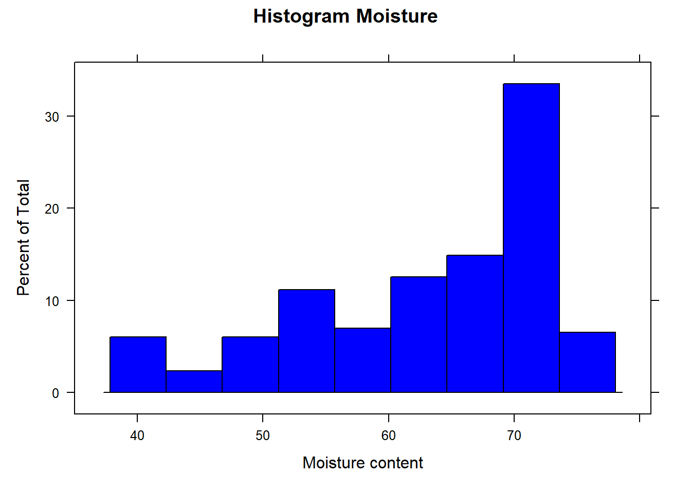
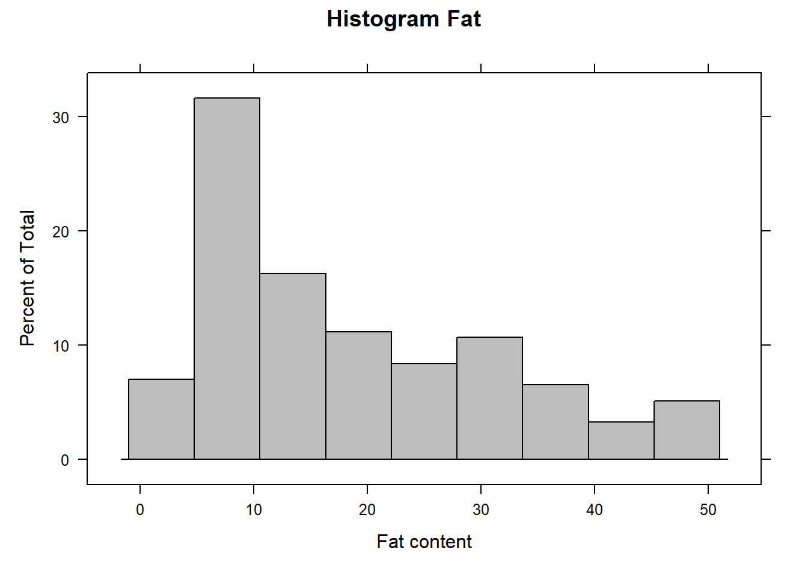
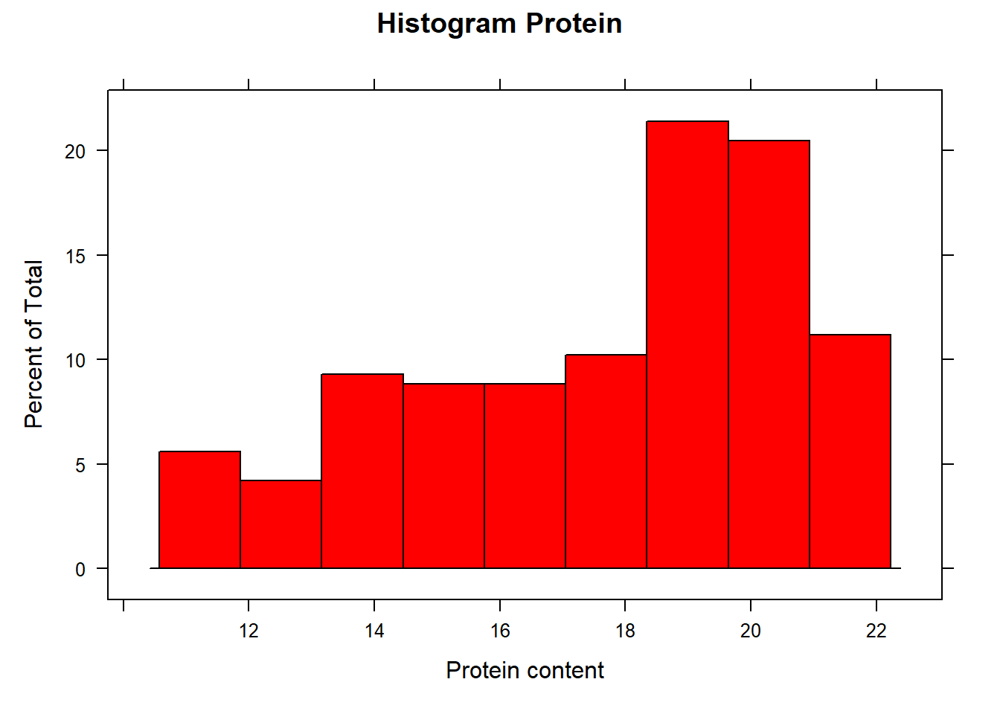

library(caret)
?tecatorLoading and organizing data
This is the first post about how to work with Near Infrared Transmitance spectra, using the data available in the package Caret and called “tecator”. Just consult the information about this data in R
When loading tecator, we have two data tables: “absorp” and “endpoints” with the spectra and reference values for the parameters “water”, “fat” and “protein” for the 215 meat samples.
data(tecator)
ls()[1] "absorp" "endpoints"The spectra data is in the “absorp” table which is a matrix of 215 rows (number of samples) ,and 100 columns (number of wavelengths ), so we can give names to the columns of “absorp” matrix.
colnames(absorp) <- seq(850, 1048, by = 2)We can have a look to the spectra and see its appearance:
matplot(colnames(absorp), t(absorp), type = "l", ylab = "Absorbance", xlab = "wavelength (nm)", main = "Raw meat spectra")
We can see the differences in absorbance for every spectra due to the scatter, differences in the pathlength and other physical reasons. This is something we have to work on to remove it and try to see as better as possibles the chemical changes due to the differences in moisture, fat and protein, which are the parameter we want to build models.
The “endpoints” table has the reference values for the parameters of interest (Moisture, Fat and Protein). It is important to have a look to the parameters distribution, so we can use for this the histogram, but first lets give names to the parameters matrix.
As we can see we have not coloumn names
colnames(endpoints)NULLSo we can give them names:
colnames(endpoints) <- c("Moisture", "Fat", "Protein")Looking to the parameters distribution
Let´s see the Moisture histogram
histogram(endpoints[ , 1], xlab = "Moisture content", main ="Histogram Moisture", col = "blue")
Now the Fat histogram
histogram(endpoints[ , 2], xlab = "Fat content", main ="Histogram Fat", col = "grey")
and finally the Protein histogram
histogram(endpoints[ , 3], xlab = "Protein content", main ="Histogram Protein", col = "red")
We can create a data frame called “tecator” with the “endpoints” and “absorp” matrices
tecator <- data.frame(endpoints)
tecator$spec <- absorpNow let´s save the dataframe to use in another post:
save.image("C:/BLOG/Workspaces/NIT Tutorial/NIT_ws1.RData")